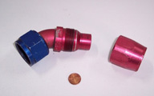

5.2.- Ligadura dinámica.

La conexión que tiene lugar durante una llamada a un método suele ser llamada ligadura, vinculación o enlace (en inglés binding). Si esta vinculación se lleva a cabo durante el proceso de compilación, se le suele llamar ligadura estática (también conocido como vinculación temprana). En los lenguajes tradicionales, no orientados a objetos, ésta es la única forma de poder resolver la ligadura (en tiempo de compilación). Sin embargo, en los lenguajes orientados a objetos existe otra posibilidad: la ligadura dinámica (también conocida como vinculación tardía, enlace tardío o late binding).
La ligadura dinámica hace posible que sea el tipo de objeto instanciado (obtenido mediante el constructor finalmente utilizado para crear el objeto) y no el tipo de la referencia (el tipo indicado en la declaración de la variable que apuntará al objeto) lo que determine qué versión del método va a ser invocada. El tipo de objeto al que apunta la variable de tipo referencia sólo podrá ser conocido durante la ejecución del programa y por eso el polimorfismo necesita la ligadura dinámica.
En el ejemplo anterior de la clase X y sus subclases A y B, la llamada al método m sólo puede resolverse mediante ligadura dinámica, pues es imposible saber en tiempo de compilación si el método m que debe ser invocado será el definido en la subclase A o el definido en la subclase B:
// Llamada al método m (sin saber si será el método m de A o de B).
obj.m () // Esta llamada será resuelta en tiempo de ejecución (ligadura dinámica)Es la conexión o vinculación que tiene lugar durante una llamada a un método para saber qué código debe ser ejecutado. Puede ser estática o dinámica.
Indica que la vinculación que se produce en la llamada a un método con la clase a la que pertenece ese método se realiza en tiempo de compilación. Es decir, que antes de generar el código ejecutable se conoce exactamente el método (a qué clase pertenece) que será llamado.
Indica que la vinculación que se produce en la llamada a un método con la clase a la que pertenece ese método se realiza en tiempo de ejecución. Es decir, que al generar el código ejecutable no se conoce exactamente el método (a qué clase pertenece) que será llamado. Sólo se sabrá cuando el programa esté en ejecución.
Ejercicio Resuelto
Ligadura dinámica en las piezas de ajedrez
Si declaramos un array de referencias a objetos de tipo PiezaAjedrez, cada casilla del array podrá apuntar a objetos de tipo Torre, Rey, Alfil, etc.
Imagina que tenemos un programa principal con las siguientes líneas de código:
PiezaAjedrez[] arrayPiezas;
arrayPiezas= new PiezaAjedrez[4];
arrayPiezas[0] = new Torre ("blanco", 1, 1);
arrayPiezas[1] = new Torre ("negro", 1, 1);
arrayPiezas[2] = new Rey ("blanco", 1, 1);
arrayPiezas[3] = new Rey ("negro", 1, 1);Analiza la ejecución las siguientes sentencias indicando, para cada caso, qué métodos se irán ejecutando y cuál sería el resultado:
boolean resultado1 = arrayPiezas[0].esMovible (1,3);
boolean resultado2 = arrayPiezas[1].esMovible (2,2);
boolean resultado3 = arrayPiezas[2].esMovible (2,2);
boolean resultado4 = arrayPiezas[3].esMovible (1,3);Indica cómo se ha producido la ligadura dinámica en estos ejemplos.
Ejercicio resuelto
Imagínate una clase que represente un instrumento musical genérico (Instrumento) y dos subclases que representen tipos de instrumentos específicos (por ejemplo Flauta y Piano). Todas las clases tendrán un método tocarNota, que será específico para cada subclase.
Haz un pequeño programa de ejemplo en Java que utilice el polimorfismo (referencias a la superclase que se convierten en instancias específicas de subclases) y la ligadura dinámica (llamadas a un método que aún no están resueltas en tiempo de compilación) con estas clases que representan instrumentos musicales. Puedes implementar el método tocarNota mediante la escritura de un mensaje en pantalla.